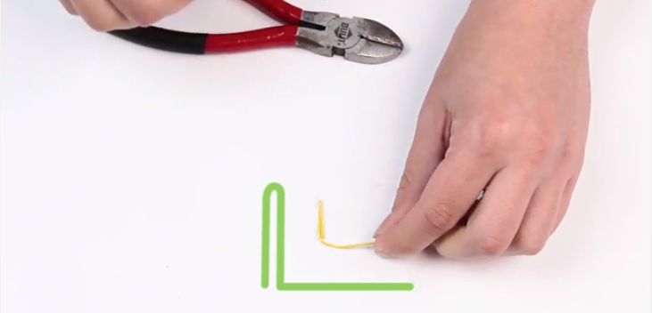

How to Lockpick Using A Paper Clip
Collecting your materials
You don't need much to start locking picking with a paper clip. You need the paper clips (obviously), one to act as a tension wrench and one to act as a lock pick. The only other thing you'll need is something like a pair of pliers in order to shape the paper clips (you can use you hands in a pinch if necessary). It's better to go for slightly larger paper clips, you want them to be strong enough that they wont bend to much during the process of picking the lock.
Unfold one the paperclips into the lockpick. This can be done by simply unfolding the large edge of your paperclip twice until there is a long, straight section. This is what you'll insert and will be your ad hoc lockpick.
How to Lockpick Using A Paper Clip
Unfold one the paperclips into the lockpick. This can be done by simply unfolding the large edge of your paperclip twice until there is a long, straight section. This is what you'll insert and will be your ad hoc lockpick.
Next you need to make your tension wrench. This is slightly more complex, but it's not exactly rocket science. Take out the bends in the clip until it is left as two straight wires with a curve at the end. Then press the end with the curve down and make a 90 degree bend in the curved end thats roughly 1cm long. Below is an imagine of what the finished product should look like.
Picking the Lock
Insert tension wrench into the bottom of the keyhole. This is as we discussed earlier, known as the shear line. You want to apply pressure with your makeshift wrench here in the same direction that they key would turn (if you had it).
After you've turned the lock slightly using your improvised wrench, the next step is to insert the pick into the upper part of the keyhole and start to "rake". Raking, as we touched on in the last lesson, is when you insert your pick, or paperclip in our case here, into the back of the keyhole and remove it quickly, all the while jiggling the pick, once again a paperclip in this instance, upward. It's importont to keep pressure on the wrench while you're doing this. Also you should note that moving the pick quickly doesn't mean you just yank it out. The main thing is to make sure that the motion is smooth, this is something you'll get a better feel for over time
Picking the Lock
Now you need to locate the pins inside the lock. While maintaining pressure on the tension wrench, you need to try to find the pins inside the keyhole using your pick. Typically locks for light commercial use will have 5, sometimes 6 pins you'll need to set in order to open the lock. You will be able to feel the pins press against your pick when you insert it, this tells you where you need to depress them.
The next step is to depress the pins. As you're depressing the pins, it's important to remember that you need to be keeping pressure on with your wrench. You should be able to notice a slight "give" when you set the pins into their unlocked position. If you're lucky mmaybe you'll even hear that classic cliche "click" sound.
The final step is to jiggle the pick until each pin is unlocked. Applying increasing pressure with the wrench, you want to jiggle the pick until all the pins are unlocked. When you hear that classic click, then you can rotate the wrench further in order to unlock the lock